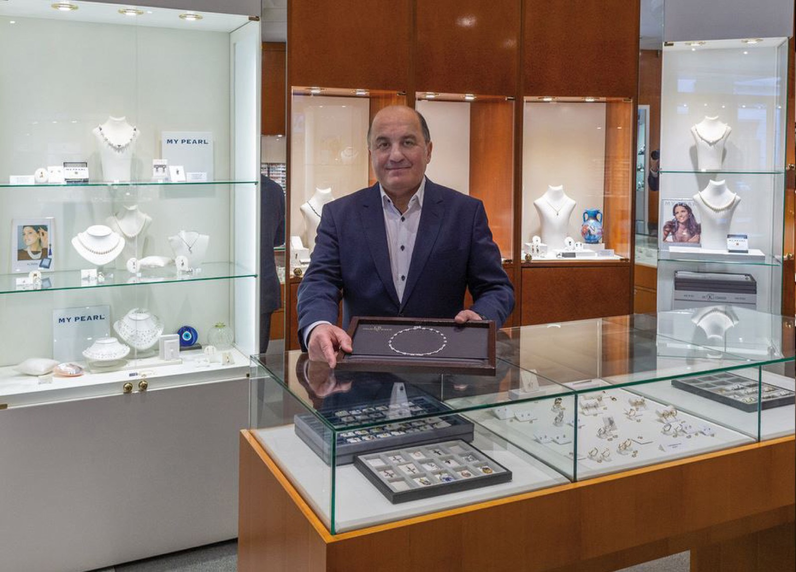

Sorgfältige Auswahl
Produkte, die handwerklich, ästhetisch und emotional überzeugen.

Ein Team

Das Wir gewinnt
Wir wählen jedes Schmuckstück sorgfältig aus. Qualität, Einzigartigkeit und langfristige Freude stehen im Mittelpunkt jeder Beratung.Juwelier Sarikow Wien
Unser Versprechen
Produkte, die handwerklich, ästhetisch und emotional überzeugen.
Direkte Bezugswege und langfristige Zusammenarbeit mit Manufakturen.
Persönliche Gespräche, ehrliche Empfehlungen und ruhige Atmosphäre.